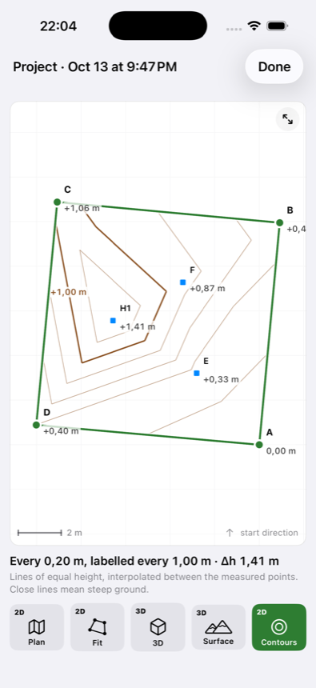
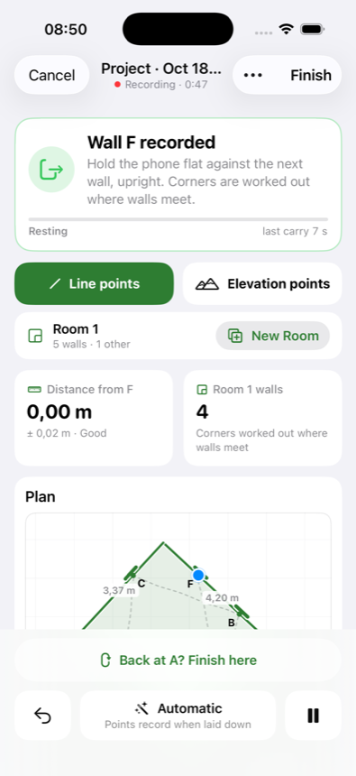

Proprietari de teren
„Are terenul cât scrie în acte?”
O primă verificare înainte să cumperi, să vinzi sau să chemi topograful — ca să știi la ce să te aștepți.
Așezi telefonul la fiecare colț, îl duci la următorul, iar WalkMeasure calculează suprafața, perimetrul, fiecare latură și diferențele de nivel. Fără ruletă, fără ajutor, fără cameră și fără GPS.
Ca un instrument de măsurat profesional, WalkMeasure urmărește mișcarea telefonului cu accelerometrul și giroscopul. De fiecare dată când telefonul stă nemișcat pe sol, aplicația corectează eroarea adunată pe drum — de aceea măsoară bine pe pași scurți, cu opriri dese.


Nu e obligatoriu, dar e mult mai comod: măsori în picioare, în ritmul tău. În aplicație, activează opțiunea „Selfie stick”.
La primul colț, telefonul stă culcat pe sol, nemișcat, cam o secundă. Ține bățul liniștit — aplicația înregistrează punctul singură.
Telefonul dă o vibrație lungă și puternică, făcută anume ca să se simtă prin bățul selfie stick-ului. Aplicația știe că e propria ei vibrație și nu o ia drept mișcare.
Du telefonul la următorul punct și pune-l din nou jos — la fiecare colț și ori de câte ori vrei pe drum. Opririle dese țin eroarea mică; dacă îl porți prea mult fără pauză, aplicația te avertizează cu un sunet.
Revii cu telefonul pe punctul de start. Conturul se închide, iar diferența măsurată între start și final îți arată, concret, cât de exactă a fost măsurătoarea.
Pentru momentele în care ai nevoie de o cifră bună acum, nu de un dosar peste două săptămâni.
„Are terenul cât scrie în acte?”
O primă verificare înainte să cumperi, să vinzi sau să chemi topograful — ca să știi la ce să te aștepți.
„Câți metri de gard? Câți metri pătrați de pavaj?”
Perimetrul și suprafața pentru ofertă, direct la client, fără să mai revii cu ruleta și un ajutor.
„Cât are curtea? Cum arată planul?”
Suprafața curții sau planul apartamentului pentru anunț, făcute în timpul vizionării.
„Unde se adună apa? Cât de abruptă e panta?”
Diferențe de nivel, hartă de pante și curbe de nivel pentru drenaj, alei, terasări și gazon.
„Cât parchet îmi trebuie?”
Plan de locuință cu camere, uși și ferestre, exportat ca PDF la scară sau DXF pentru AutoCAD.
„Cât am de semănat? Câtă folie îmi trebuie la solar?”
Parcele, livezi, solarii — suprafața în câteva minute, chiar și fără semnal la telefon.
Fiecare valoare vine cu marja de eroare estimată, ca să știi cât te poți baza pe ea.
Fiecare punct are o înălțime. Vezi terenul ca hartă de pante, curbe de nivel sau model 3D.
Pereți, camere, uși și ferestre. Grosimea peretelui dintre camere se măsoară singură.
Revii la punctul de plecare, iar aplicația îți spune cât s-a abătut măsurătoarea pe parcurs.
Raport PDF pentru client, CSV pentru Excel și DXF pentru AutoCAD — trimise din telefon.
Semnale clare la fiecare punct și când porți telefonul prea mult — nu trebuie să te uiți la ecran.
Fără cont, fără internet, fără reclame. Proiectele rămân pe telefonul tău.
Doar senzorii de mișcare ai iPhone-ului. Aplicația nu cere acces la cameră sau la locație.
Fiecare măsurătoare se salvează cu toate punctele și înălțimile; o poți corecta și reexporta oricând.
Ține telefonul vertical, cu spatele lipit de perete: aplicația înregistrează peretele. Colțurile rezultă din intersecția pereților — chiar dacă sunt ascunse după mobilă.

Un singur lucru de făcut pe ecran la un moment dat. Restul e la un gest distanță.






Nu înlocuiește topograful. Înlocuiește drumurile cu ruleta, calculele pe hârtie și așteptarea.
| Ruletă / telemetru | Topograf autorizat | WalkMeasure | |
|---|---|---|---|
| Cost | Mic, dar costă timp și un ajutor | Onorariu pentru fiecare lucrare | Aplicația, pe telefonul pe care îl ai deja |
| Cât durează | Mult pe terenuri mari sau neregulate | Programare, deplasare, zile până la documente | Câteva minute, rezultat pe loc |
| Suprafață și perimetru | Le calculezi tu | Da | Da, automat |
| Pante și diferențe de nivel | Nu | Da | Da — hartă de pante, 3D, curbe de nivel |
| Plan PDF / DXF | Nu | Da | Da |
| Precizie | Milimetri, pe distanțe drepte | Centimetri, cu echipament profesional | Estimare, cu eroarea afișată; validarea în teren e în curs |
| Valabil pentru cadastru, intabulare, autorizații | Nu | Da | Nu |
Senzorii de mișcare ai unui telefon nu sunt făcuți pentru topografie. WalkMeasure compensează prin opriri dese, calibrare și verificarea start–final, dar eroarea crește cu cât porți telefonul mai mult între opriri. De aceea aplicația îți arată mereu și marja de eroare, nu doar cifra.
Cifrele de precizie de până acum vin din simulări pe calculator, cu un model de senzori presupus — nu din măsurători reale. Pe teren, rezultatul depinde de telefon, de calibrare și de cât de liniștit stă telefonul la fiecare punct. Vom publica aici rezultatele testelor în teren, comparate cu ruleta și cu măsurători topografice.
Rezultate din teren: în curând.
Nu. Aplicația folosește doar accelerometrul și giroscopul iPhone-ului. Funcționează offline, în casă, sub copaci și oriunde GPS-ul e slab.
Nu. Nu folosește camera deloc și nici nu cere acces la ea. Singura permisiune cerută este cea pentru senzorii de mișcare.
Depinde de cât de des pui telefonul jos și de calibrare. Aplicația afișează marja de eroare la fiecare rezultat și o verifică practic când revii la punctul de start. Cifrele publicate până acum vin din simulări; rezultatele din teren vor apărea pe această pagină. Pentru cote critice, verifică cu o ruletă.
Nu. Pentru documente oficiale ai nevoie de o măsurătoare făcută de o persoană autorizată. WalkMeasure îți spune rapid la ce să te aștepți, ca să mergi pregătit la topograf.
Ca să nu te apleci la fiecare punct. Prinzi telefonul în clemă, îl așezi culcat pe sol, ții bățul liniștit cam o secundă, iar vibrația din mâner îți spune că poți merge mai departe. Activează „Selfie stick” în aplicație: așa știe că telefonul e pe sol, chiar dacă mâna ta încă ține bățul. Un băț rigid, fără joc, dă rezultate mai bune.
Pune telefonul jos la fiecare colț și, pe laturile lungi, din metru în metru sau din câțiva în câțiva metri. Fiecare oprire corectează eroarea adunată pe drum. Dacă porți telefonul prea mult fără pauză, aplicația te avertizează.
Da. Pentru camere, ții telefonul vertical, lipit de fiecare perete, iar aplicația face planul cu pereți, uși și ferestre.
Un iPhone cu iOS 17 sau mai nou.
Nicăieri. Proiectele rămân pe telefon; nu există cont, analiză de trafic sau reclame. Le trimiți tu, ca PDF, CSV sau DXF, doar când vrei.
Prețul va fi anunțat la lansare. Lasă-ne adresa ta și îți scriem primii.
WalkMeasure ajunge în curând pe App Store. Vrei să fii anunțat la lansare sau să testezi versiunea beta pe terenul tău?